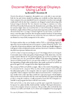
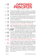
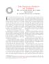
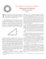

Articles and Books
A Brief Introduction to Dozenal Counting
Prof. Gene Zirkel
Basics of base-twelve (dozenal) counting
11X3
db38206.pdf

A History of the DSA
Prof. Gene Zirkel
The history of the DSA, in brief.
11E4
db49209.pdf
Eggsactly a Dozen
Prof. James Malone
Basic introduction to dozenal counting, by means of eggs.
1191
db2610b.pdf
Decimal-Dozenal Conversion Rules
Prof. Gene Zirkel
Rules for converting dozenal to decimal, integers and fractions, by hand.
11E1
DSA-ConversionRules.pdf
Featured Figures: Basic Operations
Michael deVlieger
Dozenal addition and multiplication tables.
11E4
db49224.pdf
Key Dozenal Fractions
Michael deVlieger
Pictures and graphs illustrating dozenal's unique fractional properties.
11E7
db4b224.pdf
Manual of the Dozen System (MODS)
Dozenal Society of America
Basic introduction to dozenal mathematics; Churchman's metric system; tables.
1174
ManualOfTheDozenSystem1174-web.pdf

Multiplication Tables of Various Bases
Michael deVlieger
Multiplication tables in bases (dozenal) 2-26, 28, 30, 34, and 50.
11EX
MultiplicationSynopsis.pdf
The DSA Symbology Synopsis
Michael deVlieger
A poster-sized synopsis of proposals for dozenal symbologies.
11E7
DSA-SymbologySynopsis.pdf

How Do You Pronounce Dozenals?
Prof. Gene Zirkel
The do-mo-gro system of dozenal nomenclature.
11E7
db4b20a.pdf
The DozensOnline Forum Symbols Debate
Michael deVlieger
A debate on symbols from the DozensOnline forum.
11E6
db4b120.pdf

A Numeral Toolbox
Michael deVlieger
Methods for divising numerals for non-decimal bases.
11E6
db4b111.pdf

Dozenal Mathematical Displays Using LaTeX
Donald P. Goodman III
A brief description of the LaTeX package "dozenal."
11E6
db4a21a.pdf
Featured Figures: Symbology Overview
Michael deVlieger
Summarizes many dozenal and hexadecimal numeral systems.
11E6
db4a213.pdf
Symbology Overview
Michael deVlieger
Summary of least-change dozenal symbologies.
11E6
db4a211.pdf
Presenting...Symbology
Michael deVlieger
Introduction to DB Symbology issue, Vol. 4X Iss. 2.
11E6
db4a209.pdf

The Opposed Principles
Ralph Beard
Article originally distinguishing "least change' and "separate identity" symbologies.
1161
db4a205.pdf
A Dozenal Nomenclature
Dr. Owen B. Clayton
A proposed dozenal nomenclature.
11E5
db4a109.pdf
Going Classic
Dozenal Society of America
Discusses the return of the DSA to Dwiggins numerals, away from Bell.
11E4
db49207.pdf
Symbols, Symbols, !@#$%¢&*(!? Symbols
Prof. Gene Zirkel
Explains the temporary adoption of Bell numerals by the Duodecimal Bulletin.
1192
db27210.pdf
Dozenal Home Primes
Prof. Jay Schiffman
An explanation of dozenal home primes.
11E7
db4b211.pdf
On Maximal Repeating Sequence of Decimal Expansions in Base-Twelve
T. J. Gaffney
Exploring dozenal repeating fractions, especially sevenths.
11E6
db4b109.pdf
A Dozen Properties of the Number Twelve
Dozenal Society of America
Prof. Schiffman examines some number theoretical properties of the dozen.
1192
db27309.pdf
Music, Scales, and Dozens
Dr. John Impagliazzo
Some different musical scales and their dozenal bases.
119X
db33116.pdf
Why Change?
Ralph Beard
Why our civilization should change to dozenal.
1164
db043r2.pdf
Twelves and Tens
A. C. Aitken
Why dozenal is superior to decimal.
1179
DSA_aitken_twelves_tens.pdf
An Excursion in Numbers
F. Emerson Andrews
Why dozens are a better base than decimal.
1152
DSA_andrews_excursion_numbers.pdf
My Love Affair with Dozens
F. Emerson Andrews
How Andrews fell in love with dozenal.
1184
DSA-MyLoveAffair.pdf
Reflections on the DSGB
Prof. Gene Zirkel
Some reflections on the Dozenal Society of Great Britain.
11E5
db4a113.pdf

DSA Constitution and Bylaws
Dozenal Society of America
The current Constitution and bylaws of the DSA.
1197
DSA-Constitution-ByLaws.pdf
Dozenal Frequently Asked Questions
Michael deVlieger
A comprehensive explanation of the benefits of the dozenal base.
11E7
DSA-DozenalFAQs.pdf
Some Notes on the History and Desirability of Using Alternate Number Bases in Arithmetic
Christopher J. Osburn
11E5
db4a117.pdf
Analysis of Multiplication Tables
Michael deVlieger
Comparing the traits of various bases' multiplication tables.
11E7
DSA-MultAnalysis1.pdf
Antipatio al Aritmetiko
Ralph Beard
Ralph Beard makes the case for dozenalism in Esperanto.
1171
antipatio.pdf
The Aspirant's Tests
Dozenal Society of America
Tests for proficiency in the dozenal system.
DSA_aspirants_test.pdf
TGM: A Coherent Dozenal Metrology
Tom Pendlebury / Donald P. Goodman III
Description of the TGM complete dozenal system of weights and measures.
11E8
tgm.pdf
Boxes & Cans: Some Points on Packaging
Troy
Dozenal's advantages in packaging
1193
DSA_boxes_cans_troy.pdf
Dozens vs. Tens
Thomas Leech, F.C.S.
Defense of dozenal notation for arithmetic, weights, measures, and money.
10E6
leech_thomas_dozens_tens.pdf
Dozenal Divisibility Tests Quick Guide
Treisaran
Dozenal divisibility tests
11E9
DSA_treisaran_div_tests.pdf
Systems of Numeration: A Plea for the Duodecimal
Rev. Thomas J. A. Freeman, S.J.
An early plea for the adoption of the dozenal base.
1119
DSA_freeman_duodecimal.pdf
The Number Rhyme
Donald P. Goodman III
A simple rhyme teaching counting and the basic characteristics of number one to a dozen.
11E9
DSA_number_rhyme.pdf
RAENBO Dozenals
Timothy Travis
Travis' RAENBO system of dozenals.
11E9
DSA_RAENBO_all.pdf
Duodenal System of Arithmetic, Measures, Weights and Coins
John William Nystrom
A defense of dozenal arithmetic and measurement, along with proposed symbols, nomenclature, and metrics.
1103
DSA_nystrom_duodenal_arith.pdf
Laplace sur Douzainisme
Pierre-Simon Laplace
La systeme de la douzaine (la systeme duodecimale) en bref.
109X
DSA_laplace_dozenal.pdf
Leclerc sur Douzainisme
Georges-Louise Leclerc, Comte de Buffon
Une morceau de Georges-Louis Leclerc, Comte de Buffon, d'avantage de la douzaine dans arithmetique.
1041
DSA_leclerc_douzainisme.pdf
Playfair on Dozenalism
John Playfair
An early English defense of the dozenal system.
1067
DSA_playfair_duodecimals.pdf
Systematic Dozenal Nomenclature
John Kodegadulo
Systematic Dozenal Nomenclature
11EX
DSA_kodegadulo_sdn.pdf
Twelve vs. Ten
William B. Smith
A brief, turn-of-the-century defense of the dozenal base.
1117
DSA_smith_william_tens_twelves.pdf

A Rational Solution to the Problem of Weights and Measures
Sidney A. Reeve
A defense of the dozenal system from the perspective of a mechanical engineer.
1127
DSA_reeve_rational_solution.pdf
A Duodecimal Scale
Dr. Edward Brooks
A turn-of-the-century account of dozenal arithmetic and notation.
1104
DSA_brooks_philosophy_arithmetic.pdf
Filosofia de la numeracion
D. Vicente Pujals de la Bastida
La superioridad de la doce como un base de la numeracion.
1098
pujals_de_la_bastida_filosofia_de_la_numeracion.pdf

De la numeracion que debe preferirse.
D. Vicente Pujals de la Bastida
Cuya base debe elegir?
1098
DSA_pujals_excerpt_docena.pdf
De Arithmetica
Ioannis Caramuelis (Juan Caramuel y Lobkowitz)
Very early exposition of dozenal.
E48
DSA_lobkowitz_duodenaria.pdf
Rationality
Donald Hammond ("Troy")
The role of ratios in weights and measures.
11X0
DSA_troy_rationality.pdf
The Duodecimal System of Notation
L. H. Vincent
A simple, mostly verbal argument for dozenal.
1131
DSA_vincent_duodecimal.pdf
Collected Works on Reckoning Reform
Sir Isaac Pitman
Collected works of Sir Isaac Pitman on the dozenal base.
10X8
DSA_pitman_collected.pdf
Practical Polygons
Donald Hammond ("Troy")
Numbers considered through polygons.
1196
DSA_troy_polygons.pdf
Mathamerica
Grover Cleveland Perry
A stridently patriotic argument in favor of dozenals from an interwar Protestant American viewpoint.
1149
DSA_mathamerica.pdf
Against the Metric System
Herbert Spencer
A critique of the metric system (and the customary-imperial system) and a defense of dozenals.
1122
spencer_against_metric.pdf
La Zonnomie, ou La Décimale et la Duodécimale
A.-D. Gautier
Un explication de la système de douzainisme, avec des nouveaux chiffres et un système de mesure et d'argent.
10E0
gautier_la_zonnomie.pdf
Manual of the Dozenal System
Dozenal Society of America
A short but thorough introduction to dozenals for those really interested in learning and using them.
1200
DSA_mods_rev.pdf
A Dozenal Primer
Dozenal Society of America
A brief explanation of the dozenal system designed for beginners, in only a dozen pages.
1200
DSA_primer.pdf
The Duodenary Scale
John Wilkes, Ed.
An exploration of dozenal arithmetic and its advantages.
1078
DSA_encyc_londinensis.pdf
The Personality of the Integers from One to One Gross
Prof. Jay Schiffman
A scholarly, if brief, exploration of the major properties of the integers between 1 and 100.
11X3
DSA_schiffman_personality.pdf
Is the decimal system appropriate for modern mathematics?
Naomi Wray
Ms. Wray gives an excellent examination of the decimal base and its suitability for modern mathematics.
1202
wray_naomi_dozenal.pdf
De Numeratione
Brennus Legranus
An erudite and stimulating article concerning the basis and nature of dozenal. In the original Latin.
1203
legranus_numeratione.pdf
An Ancient Duodecimal System
Rufus P. Williams
A brief look at the "pure" ancient duodecimal system of measures, primarily in the relation between the foot, pint, and bushel.
1131
DSA_williams_ancient_duodecimal.pdf
